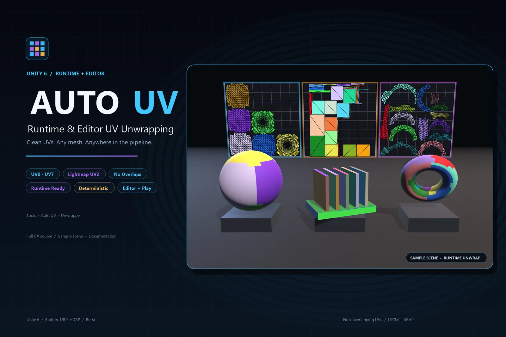
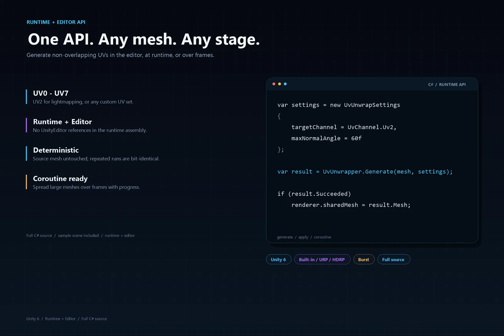
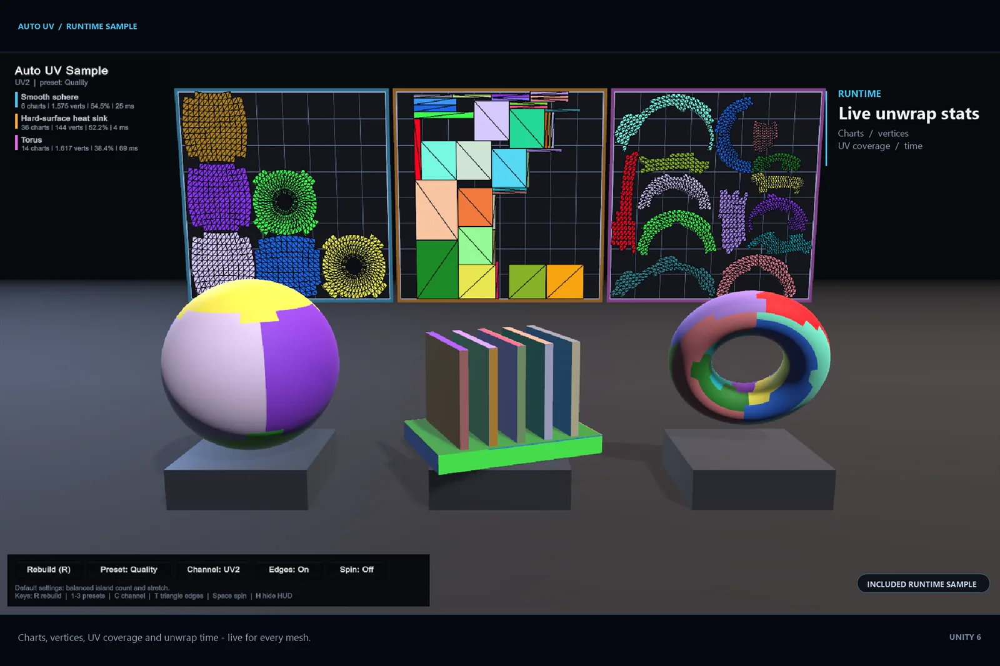
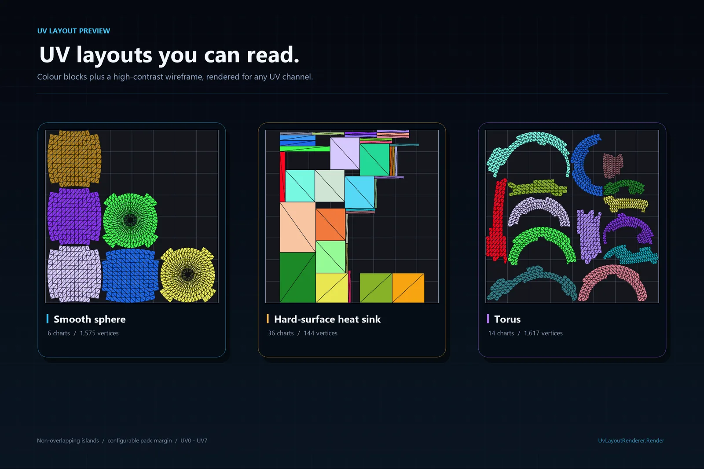
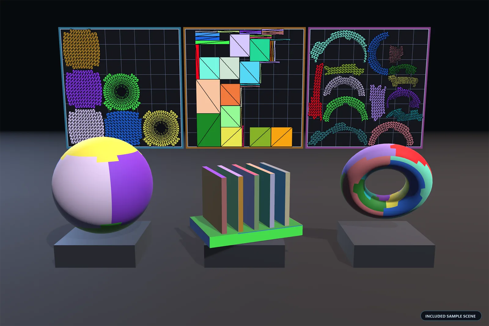

Overview
Auto UV generates an additional, non-overlapping UV set (UV0–UV7) for any mesh, usable at runtime, in the editor and on procedural meshes. The most common application is the secondary UV set used for lightmapping (UV2), but the API itself is purpose-independent.

- Any UV channel — writes to
UvChannel.Uv(uv0) throughUvChannel.Uv8(uv7); the default is UV2. - No overlaps — charts are cut apart and flattened individually, and packing keeps a
packMarginbetween islands. - Straighter seams, fewer islands — seam steps are shaved down and small fragments merged into neighbouring islands.
- Low stretch — normal-cone charting, LSCM flattening and ARAP refinement; round parts such as spheres and capsules are split into regular axial charts.
- All vertex channels preserved — normals, tangents, vertex colours, UV0–UV7, skin weights, BindShape, BlendShapes and submeshes (line and point submeshes pass through untouched).
- Runtime ready — no reference to
UnityEditor, so it works in players, in the editor and inside frame-spread coroutines. - Deterministic — repeated runs on the same input produce bit-identical results.
- Source mesh untouched —
Generateproduces a new mesh; useApplywhen writing back is intended. - Layout preview —
UvLayoutRendererrenders any UV channel into a square texture, optionally as flat colour blocks with one colour per island.
- Engine
- Unity 6+
- Channels
- UV0–UV7
- Default target
- UV2 (lightmap)
- Dependencies
- Burst · Collections
Installation
Copy the whole Assets/AutoUV folder into the target project's
Assets/ folder, or import the package. Targets Unity 6000+ and
depends only on Unity.Burst, Unity.Collections and
Unity.Mathematics.
Assets/AutoUV/
Runtime/ # runtime assembly AutoUV
Editor/ # editor window and editor helpers
Samples/ # ready-to-run sample scene and script
README.md # this manual
The runtime assembly has no UnityEditor references, so the same
calls work in a player build. The editor window and the auxiliary editor
helpers live in the separate AutoUV.Editor assembly.
Quick start
Generate a new mesh
The source mesh is only read, never modified:
var result = UvUnwrapper.Generate(sourceMesh);
if (!result.Succeeded)
{
Debug.LogError(result.Message);
return;
}
var mesh = result.Mesh; // new mesh with UV2 writtenProvide settings
var settings = new UvUnwrapSettings
{
targetChannel = UvChannel.Uv2,
maxNormalAngle = 60f,
angleError = 1.5f,
areaError = 1.35f,
packMargin = 1f / 1024f,
fineDecomposition = true,
maxSolverIterations = 512
};
var result = UvUnwrapper.Generate(sourceMesh, settings);Write in place
// The source mesh must be readable (Read/Write Enabled, or a mesh created at runtime).
UvUnwrapper.Apply(mesh, settings);Write into a specific target mesh
UvUnwrapper.Generate(sourceMesh, targetMesh, settings);Coroutine (large meshes without frame stalls)
yield return UvUnwrapper.GenerateCoroutine(
mesh,
settings,
result => Debug.Log($"{result.ChartCount} charts"),
progress => progressBar = progress);Progress and cancellation
UvUnwrapper.Trace = message => Debug.Log(message); // progress messages (stage diagnostics only in development builds)
UvUnwrapper.CancelRequested = () => shouldStop; // return true to abort generation
These hooks are per play session: they are cleared when a play session
starts (this also covers Fast Enter Play Mode), so assign
them from Awake, OnEnable, Start or
later, not from a static initializer.

Result reference
Every call returns a UvUnwrapResult:
| Member | Description |
|---|---|
Succeeded / Message | Whether the run succeeded; the failure reason. |
Mesh | The generated mesh (null on failure). |
ChartCount | Number of UV islands. |
SourceVertexCount / VertexCount / TriangleCount | Source vertices, output vertices after splitting, and triangles. |
UvCoverage | Fraction of the 0–1 square covered by UVs. |
Channel | UV channel that was actually written. |
DurationMilliseconds | Total duration. |
Profile | Per-stage timings; only non-null in development builds (AUTO_UV_DEV). |
Settings reference
| Field | Default | Description |
|---|---|---|
targetChannel |
Uv2 |
Which channel to write. Enum names follow "which UV set", values are the API channel index: Uv → 0 (mesh.uv), Uv2 → 1 (mesh.uv2) … Uv8 → 7 (mesh.uv7). |
hardAngle |
88 | Angle threshold for smooth adjacency: adjacent faces whose normals differ by more than this are not connected, so charts do not grow across hard edges. |
maxNormalAngle |
60 | Maximum normal spread per chart; lower values reduce stretch and increase the island count. |
angleError |
1.5 | Angle-error budget (p95 triangle anisotropy); charts above it are split. |
areaError |
1.35 | Area-error budget (p95 deviation of the UV/3D area ratio). |
fineDecomposition |
true |
Build small charts first and merge them under the quality gate; false builds coarse charts and splits them down. |
packMargin |
1/1024 | Spacing between islands in 0–1 space. |
maxSolverIterations |
512 | LSCM iteration cap per chart. |
splitOnUvSeams |
false |
Split charts along existing UV0 seams; off by default to avoid chopping limbs into strips. |
Settings are cloned and clamped to their valid ranges when a generation starts; the instance you pass in is never modified.
Editor window
Open the window with Tools ▸ Auto UV ▸ Unwrapper, select mesh assets, GameObjects or prefabs, then generate UVs.
- The preview follows the selection and the target channel. Scroll to zoom, drag to pan, double-click to reset the view. The dark preview area follows the window's aspect ratio; the UV square is fitted to the shorter side and always stays square. Zooming and panning are immediate and crisp. Fully stacked UV footprints are reported below the preview.
- Color Block Texture / Triangle Mesh — show the preview as flat colours per UV island and/or triangle edges. Colour Block off + Triangle Mesh on is a lines-only wireframe with no fill; both on shows the fills with the triangle edges on top.
- Preview (next to the Unwrap button, off by default) — previews the layout generated from the current settings instead of the mesh's stored UVs.
- Update Source Mesh — writes the generated UVs into the selected meshes. With it off, the results are saved as mesh assets or prefabs in a chosen folder and revealed in the Project window; scene objects are copied, so the scene is not modified. A skinned renderer is saved together with its skeleton.
- Export Color Block Texture — also creates a colour-block texture and applies it to the generated model: a prefab embeds it as a sub-asset, a mesh asset gets a separate texture asset.

Preview the UV layout
var texture = UvLayoutRenderer.Render(mesh, UvChannel.Uv2, 1024);
RenderPixels returns a Color32[] and can run on a
worker thread; CreateTexture uploads it on the main thread. Pass
colorBlocks: true for per-island colours and
drawTriangles: false to hide the edges;
RenderColorBlockTexture builds the texture applied to a model.

Sample
Samples/Scenes/AutoUV Demo.unity unwraps three procedural meshes
at runtime and shows the generated colour blocks on the models and the UV
layout on panels behind them. Open the scene and press Play.
The sample component also runs in edit mode, so the finished result appears
without entering play mode; in play mode the on-screen HUD regenerates the
UVs with different presets and can switch the target channel.

Notes
- Read-only meshes —
Generateonly reads the source mesh and never modifies it. In the editor it normally works even when the asset's Read/Write Enabled is off; the descriptive exception is only thrown when the CPU data really has been stripped, typically in a player build. - In-place writes (
Apply) require Read/Write, otherwise they throw an exception that points atGenerateinstead. - Imported model meshes (
.fbx,.obj, …) cannot be updated in place: the model importer regenerates them. Disable Update Source Mesh to generate a copy instead. - Non-triangle submeshes (lines, points) are preserved verbatim; their vertices get a UV of 0.
- Fast Enter Play Mode — the
TraceandCancelRequestedhooks are reset when a play session starts. The other runtime statics are immutable caches, primitive scratch buffers, or counters that are reset at the start of every pass, so keeping them across play sessions is intentional and safe.
Development switch
Detailed per-stage profiling and the development tools are not shipped with
release builds and are controlled by the AUTO_UV_DEV define
(undefined by default).
| Feature | Undefined (release default) | AUTO_UV_DEV defined |
|---|---|---|
Stage timings (result.Profile) | No-op; Profile is null | Accumulated per stage |
Diagnostic(...) messages | Calls and their strings are compiled out | Emitted through UvUnwrapper.Trace |
Report(...) progress messages | Retained | Retained |
| Tools ▸ Auto UV ▸ Run Benchmark and Generate Verification Samples | Not compiled | Available |